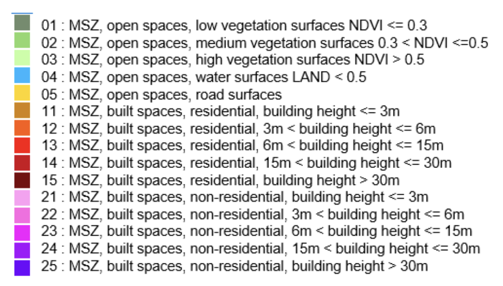
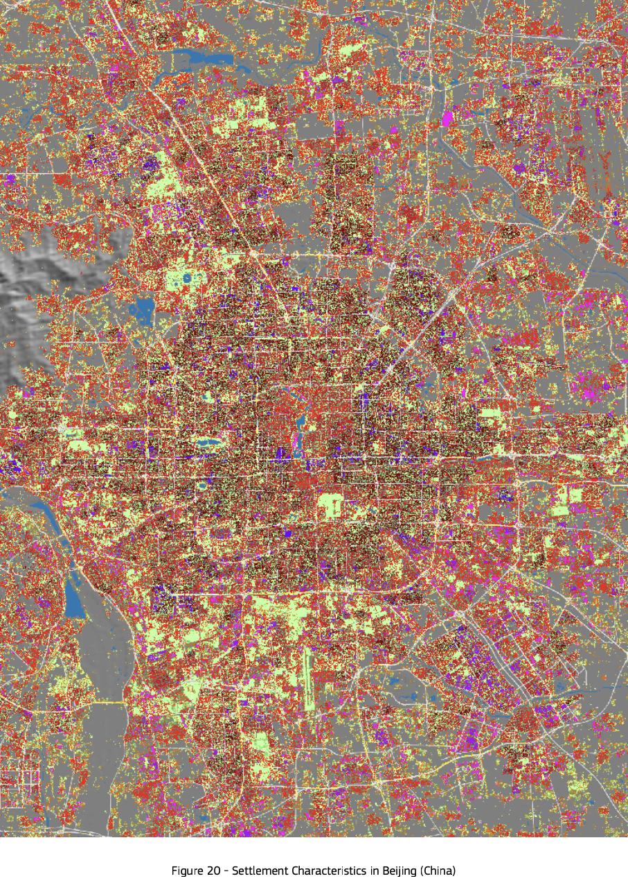
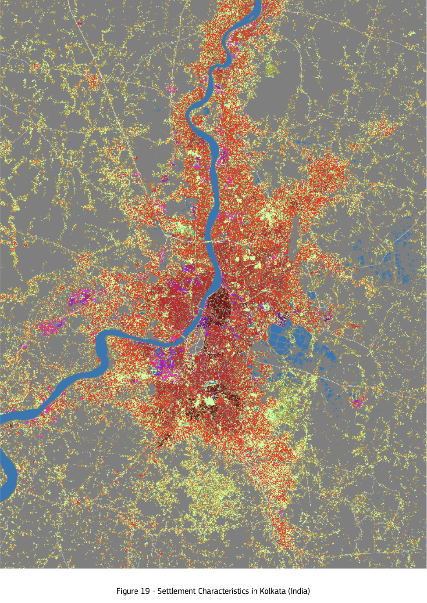

Plan Artemis is a comprehensive and
experimental urban model with hints on localized and
generalized applications to build more sustainable, happier cities.
In Greek mythology, Artemis is a goddess representing the nature.
Deriving our name from her, we have a vision refurbishing the future
of cities, of people's satisfaction, and of the environment, which
we cannot envision without battling climate change's destruction of
Earth.
Introduction
Climate change has taken its toll on countless people, no matter
what part of the world they live in. As technological advances are
made, we find that urbanization has become an inevitable process,
and similarly, most people have already been dwelling in urban
areas. Urban areas are characterized by their distance to nature,
complexity of infrastructure, and automation of daily tasks. With
this structure in mind, we can recognize that climate change targets
those who live in urban areas in a unique way.
Greenhouse gases, including carbon dioxide, methane, nitrous oxide,
and chlorofluorocarbon (CFC), are a great contributor to climate
change. Because these gases can travel great distances over the
Earth's atmosphere and impact other regions aside from their origin,
we conclude that an urban plan that aims to combat climate change
must consider global action for the best effectiveness.
As important as it is to combat climate change, we must also provide
support for those who are affected by it in the meantime. An urban
plan should not only work toward reducing the production of harmful
gases leading to climate change, but it must also propose solutions
to the struggles it has already inflicted on people and the
environment. For this objective, it's worth recognizing both the
causes and effects of climate change as a first step.
Causes of climate change
According to the UN website, following agents contribute to climate
change:
Generating power
Manufacturing goods
Cutting down forests
Using transportation
Producing food
Powering buildings
Consuming too much
(extract from
https://www.un.org/en/climatechange/science/causes-effects-climate-change)
Effects of climate change
According to the UN website, climate change results in the following
scenarios:
Hotter temperatures
More severe storms
Increased drought
A warming, rising ocean
Loss of species
Not enough food
More health risks
Poverty and displacement
(extract from
https://www.un.org/en/climatechange/science/causes-effects-climate-change)
Having touched on some key facts about climate change, we are ready
to present our blueprint for more sustainable cities with localized,
generalized, and additional cues.
The Urban Plan
Localized suggestions
An urban plan should take into account the current structure of
human settlements, which it will provide improvements to. We address
the cities Beijing, China and Kolkata, India to draw inspiration for
how an ideal, sustainable city should be structured. The legend
below gives some necessary information to understand the following
graphics.

1. Beijing, China

Based on this settlement data of Beijing, China, we can spot a
striking abundance of residential areas and the scarce distribution
of green areas between those. As buildings tend to utilize fossil
fuels, like natural gas, to maintain comfortable warmth, those green
areas can compensate for carbon dioxide emissions to an extent.
Adopting this observed pattern, our urban plan recommends planting
trees between buildings and roadsides in crowded areas.
Nevertheless, we realize that green areas are still somewhat
isolated, sometimes uneven, and insufficient. Ranked by priority,
our urban plan includes the following goals:
City leaders should invest in planting trees in open spaces with
low vegetation (gray), compensating for the carbon dioxide
emissions. For the parts surrounded by water (blue), agricultural
practices should be prioritized to sustain economic growth, as
water is expected to accelerate agricultural benefits. To minimize
future flooding incidents and risking people's shelters,
settlements shouldn't be built near water resources.
Non-residential areas (pink, purple) should be deconstructed, and
new housing areas should be built in their place. During the
deconstruction, the waste should be recycled instead of outright
dumped. For the reconstruction, recycled materials should be
preferred. This way, a sustainable loop of recycling materials can
be established.
In relation to some settlements located close to water resources,
we recommend building small healthcare departments that deal with
emergencies on potential flooding incidents. If possible, we
recommend the excavation of open areas with low vegetation near
these water resources to expand the space water fills in. The soil
in those areas should be replaced and reused for agricultural
activities.
In some settlements surrounded by a great volume of trees
(expected to be light green), emergency services to address
potential wildfires should be employed. We recommend creating
communicative services, which residents can report wildfires to,
and building local and small departments of firefighters with
sufficient equipment to minimize potential damage.
2. Kolkata, India

In Kolkata, India, we can see a long-flowing river in the middle of
the city, which settlements directly accompany. We see that this
poses an increased risk of flooding. In addition, there's an
abundance of open areas with low vegetation. Ranked by priority, our
urban plan includes the following goals:
City leaders should build emergency departments that can provide
immediate support for victims of potential flooding incidents.
Furthermore, paths for the water to flow, especially leading to
open areas, should be excavated to minimize the risk of flooding
in the future and aid in plant growth and economic development.
Because the river seems to disrupt the flow of transportation
routes leading to longer durations of travel and lower preference
of public transport, we recommend building more bridges that
enable passage over the river. This way, transportation in the
city is facilitated, and less emissions are made to navigate
around.
We know that renewable energy organizations are a great
replacement of fossil fuels. The river stands out as a great
opportunity to utilize hydropower facilities, serve the rest of
the city, and even power this urban plan practically.
Considering open areas with high vegetation (light green) are
distributed somewhat regularly, we suggest prioritizing
agricultural initiatives on open areas with low vegetation (gray).
To compensate for the high density of buildings in the center, the
gray areas are a better option to continue urbanization.
Generalized and additional suggestions
1. Health risks owing to air pollution
NASA Earth Observatory Data suggests that nitrogen dioxide in the
air is attributable to cases of pediatric asthma and turns the
spotlight on urban areas. Accordingly, children tend to be the most
susceptible to respiratory diseases, and air pollution is universal
and carries deadly risks. Our urban plan includes the following
goal:
More, small, and decentralized hospitals that are concentrated
among the city, focusing on respiratory diseases and prioritizing
children, should be established. This way, we encourage parents to
seek help for their children's health conditions that seem trivial
and reduce potential emissions made while traveling to bigger
hospitals, including nitrogen dioxide, by promoting shorter
distances.
2. Landfills (city dumps)
In some cities, the garbage materials lead to specific areas
destined for storage. Sometimes, it's the governments that choose to
store such waste in areas disparate from cities. Despite not
affecting urban lives, they are harmful for ecosystems and cause air
and underground-water pollution. We urge that waste-disposal
facilities be used in these cities.
Waste-disposal facilities can produce electricity and heat from the
methane originating from landfills and natural fertilizers from
household waste. Furthermore, they can exploit bacteria in spaces
without oxygen to destroy organic waste.
Sweden presents a great alternative storage model. Their
"waste-to-energy" plan burns 2 million tons of the country's waste
in incinerators, recycling 99% of Sweden's waste. The gravity of
this situation is also evident in the garbage coming in from Norway
at a hefty price. Norway, selling its waste to Sweden for a fee,
takes back the resulting metal ash from Sweden, as incineration
would be more costly within its own borders. Our urban plan includes
the following goals:
Do not store the city's garbage, but rather create sustainable
facilities, such as waste disposal facilities, solid waste
transfer stations, recycling facilities that citizens can directly
use, composting facilities, and medical waste disposal facilities.
Use waste-derived fuel: the conversion from non-recyclable waste,
which comes from municipal, industrial, and commercial sources,
into fuel for energy purposes by processing them through physical,
chemical and mechanical processes.
3. Access to public resources
The residents' well-being is critical in sustainable cities. We
believe that this necessitates guaranteed access to quality
education, safe health centres, easy-to-access public
transportation, garbage collection services, and good air quality,
among other modern life demands.
If the populations and challenges of cities evolve, so does the
necessity of adaptive solutions. For example, New York City's
post-Sandy action plan consists of 250 ambitious initiatives of
infrastructure resilience, related to transportation,
telecommunications, parks, insurance, and building structure. Our
urban plan includes the following goals:
Health systems aim for protection with equal focus on treatment.
Doctors should take care of sicknesses before they appear, and not
just after. To apply this, systems should not sectorize the
vaccine cycle. Therefore, protector methods must be delivered by
states to the people living in complex or outer-city areas.
To provide equity in education, we believe that schools should not
be customized to a specific group of people. Plus, higher
education should not request money in any case. For people living
in complex or outer-city areas, institutions that provide
education up to the compulsory education level and that provide
education in general culture for people beyond school age should
be established. Teachers who have just graduated can work at these
institutions to gain experience and reduce unemployment. "Village
Institutions" in Turkiye, which were implemented between 1940 and
1954, are good examples for such an approach.
Cultural activity centers that provide free cultural and daily
courses should be set up.
City leaders can build free or cheap individual transportation
systems (such as bicycles and electronic scooters) that can be
controlled via an application. A taxi-like system can be built for
people with special needs.
4. Urban renewal actions
Another fundamental characteristic of sustainable cities is the
renovation of public spaces. Public streets, squares, parks, urban
spaces, as well as modern irrigation and waste management practices,
help preserve the cultural heritage of a city through renovation and
restoration. Ideally, urban renewal in a city is done in a
completely integrated way. For example, in Melbourne, there are
rebates designed to incentivize property owners to adopt sustainable
practices resulting in the efficient use of energy and water while
reducing their waste to a minimum.
5. Recognizing climate justice
While our urban plan has proposed as many principles as possible,
these demands are the most applicable by only small groups of people
who control cities, corporations, and governments. In addition, we
realize that neither everyone is equally responsible for climate
change nor everyone is equally facing its risks.
According to Our World in Data, the countries China, the United
States, India, Russia, and Brazil appear to be pioneers in
greenhouse emissions. We demand that governments and corporations of
these countries should take the lead in combating climate change and
helping those affected.
In any region, the rich possess the most resources to respond to and
recover from disasters driven by climate change and often make the
greatest contribution (e.g. by deploying private jets). Women,
people of color, marginalized communities, and lower classes are
faced with the additional burden of housing, employment, and
financial recovery, and they experience the greatest losses. Our
urban plan necessitates the confrontation of the most privileged
people to take accountability and prioritize the health, safety, and
satisfaction of the most damaged groups of people.
Conclusion
This marks the end of our urban plan. We have touched on the causes
and effects of climate change, our proposed improvements both
pertaining to specific locations and applicable in general contexts,
and additional demands to maximize the happiness of people and the
health of the environment. We realize that our plan is not perfect
at any cost, but we hope it will provide people with a greater
awareness of climate change and inspire concrete action toward a
more desirable future.